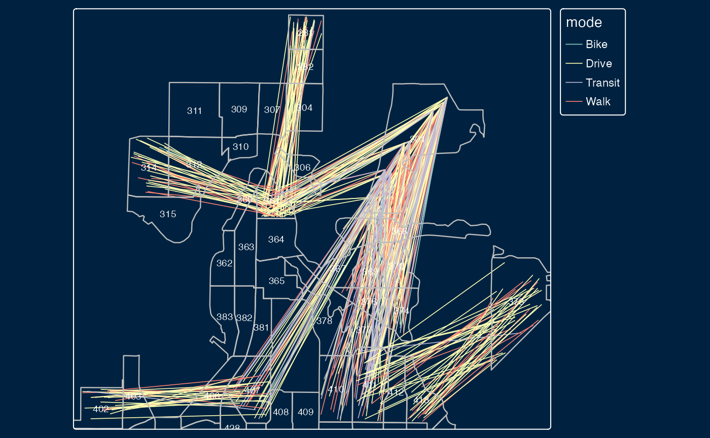

Getting started
Installing R
To generate new scenario files to import into A/B Street with the abstr R package, you need to have installed a stable version of Rstudio and R.
Installing A/B Street
Install the latest build of A/B Street for your platform. Or if you prefer, build from source, but it’s not necessary for any integration with the abstr package.
Using abstr
Load the package as follows:
The input datasets include sf objects representing buildings, origin-destination (OD) data represented as desire lines and administrative zones representing the areas within which trips in the desire lines start and end. With the exception of OD data, each of the input datasets is readily available for most cities. The input datasets are illustrated in the plots below, which show example data shipped in the package, taken from the Seattle, U.S.
library(abstr)
library(tmap) # for map making
tm_shape(montlake_zones) + tm_polygons(col = "grey") +
tm_shape(montlake_buildings) + tm_polygons(col = "blue") +
tm_style("classic")Example data that can be used as an input by functions in abstr to generate trip-level scenarios that can be imported by A/B Street.
The map above is a graphical representation of the Montlake residential neighborhood in central Seattle, Washington. Here, montlake_zones represents neighborhood residential zones declared by Seattle local government and montlake_buildings being the accumulation of buildings listed in OpenStreetMap
The final piece of the abstr puzzle is OD data.
head(montlake_od)
#> # A tibble: 6 × 6
#> o_id d_id Drive Transit Bike Walk
#> <dbl> <dbl> <int> <int> <int> <int>
#> 1 281 361 23 1 2 14
#> 2 282 361 37 4 0 11
#> 3 282 369 14 3 0 8
#> 4 301 361 27 4 3 15
#> 5 301 368 6 2 1 16
#> 6 301 369 14 2 0 13In this example, the first two columns correspond to the origin and destination zones in Montlake, with the subsequent columns representing the transport mode share between these zones.
Let’s combine each of the elements outlined above, the zone, building and OD data. We do this using the ab_scenario() function in the abstr package, which generates a data frame representing tavel between the montlake_buildings. While the OD data contains information on origin and destination zone, ab_scenario() ‘disaggregates’ the data and randomly selects building within each origin and destination zone to simulate travel at the individual level, as illustrated in the chunk below which uses only a sample of the montlake_od data, showing travel between three pairs of zones, to illustrate the process:
set.seed(42)
montlake_od_minimal = subset(montlake_od, o_id == "373" |o_id == "402" | o_id == "281" | o_id == "588" | o_id == "301" | o_id == "314")
output_sf = ab_scenario(
od = montlake_od_minimal,
zones = montlake_zones,
zones_d = NULL,
origin_buildings = montlake_buildings,
destination_buildings = montlake_buildings,
pop_var = 3,
time_fun = ab_time_normal,
output = "sf",
modes = c("Walk", "Bike", "Drive", "Transit")
)The output_sf object created above can be further transformed to match A/B Street’s schema and visualised in A/B Street, or visualised in R (using the tmap package in the code chunk below):
tm_shape(output_sf) + tmap::tm_lines(col = "mode", lwd = .8, lwd.legeld.col = "black") +
tm_shape(montlake_zones) + tmap::tm_borders(lwd = 1.2, col = "gray") +
tm_text("id", size = 0.6) +
tm_style("cobalt")
Each line in the plot above represents a single trip, with the color representing each transport mode. Moreover, each trip is configured with an associated departure time, that can be represented in A/B Street.
The ab_save and ab_json functions conclude the abstr workflow by outputting a local JSON file, matching the A/B Street’s schema.
output_json = ab_json(output_sf, time_fun = ab_time_normal, scenario_name = "Montlake Example")
ab_save(output_json, f = "montlake_scenarios.json")Let’s see what is in the file:
file.edit("ab_scenario.json")The first trip schedule should look something like this, matching A/B Street’s schema.
Importing scenario files into A/B Street
After generating a montlake_scenario.json, you can import and simulate it as follows.
- Run A/B Street, and choose “Sandbox” on the title screen.
- If necessary, change the map to the Montlake district of Seattle, or whichever map your JSON scenario covers.
- Change the scenario from the default “weekday” pattern. Choose “import JSON scenario,” then select your
montlake_scenario.jsonfile.
After you successfully import this file once, it will be available in the list of scenarios, under the “Montlake Example” name, or whatever name specified by the JSON file.
Projects supporting abstr
Several open source R packages enabled the creation of abstr.
These include:
Context
To further understand the methods and motivations behind abstr, it helps to have some context. The package builds on the ecosystem of open source software for geospatial data (FOSS4G) and packages such as stplanr for working with transport data in R. stplanr was developed to support development of the the Propensity to Cycle Tool (PCT), an open source transport planning system for England and Wales. The PCT package enables access to the data generated by the PCT project, plus scenario of change modeling (not forecasting) at the origin-destination level, which can provide results at regions, local, route and route network levels.

The PCT provides a range of deterministic scenarios of change, such as go_dutch (where cycling levels matches that of the Netherlands), gender_eq (where there is equal levels of cycling among Female and Males) and gov_target (where cycling levels reflect that of UK government current targets). An academic paper on the PCT provides further detail on the motivations for and methods underlying the project. In 2018 the beasty stplanr (sustainable transport planning) package and R journal article came on the scene, and further provided functions for solving common problems in transport planning and modeling, as well as advocating a transparency in tool usage within the transport planning paradigm.

Finally, on the R side, in 2021 the od package was released which provided functions for working with origin-destination data. A central focus in all of the packages and papers mentioned above is to provide open access transport tools to support data driven transport policies based on an objective and transparent evidence base.
For more on the history motivating the development of the abstr package see the pct_to_abstr vignette